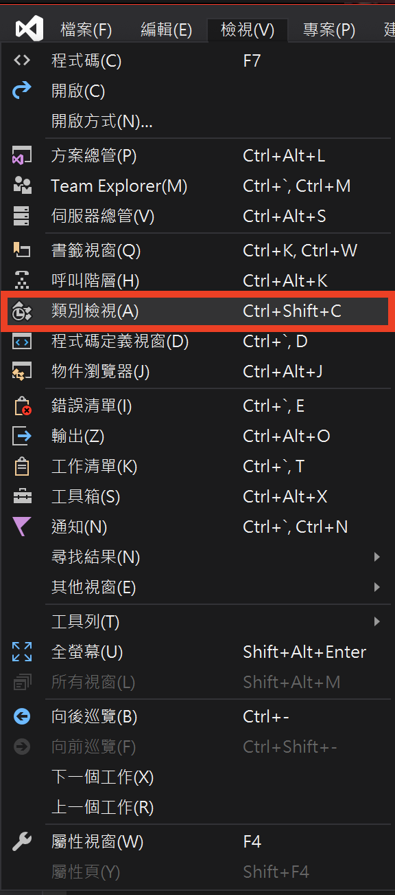

在C/C++的基本資料型態中沒有複數(Complex Number)這樣的東西，所以這個實習我們要用C++的類別來定義一個複數型態。
這個Complex型態除了要記住實數部分跟虛數部分之外，還要定義複數的運算，這樣才能完整描述整個Complex類別：
這個實習我們必須完成下面的運算：
請建立一個空專案："檔案>新增>專案"，請取消勾選「為方案建立目錄」，專案命名為Lab11-1，按下確定。
在方案總管中，加入一個新項目testComplex.cpp，並且拷貝底下的程式碼：
#include<cstdlib>
int main()
{
system("pause");
return 0;
}建置>建置方案(Ctrl+Shift+B)

切換到類別檢視的窗格，右鍵新增>類別，類別名稱輸入Complex，並且勾選「建立虛擬解構函式」，點擊完成。
這時你在類別檢視的窗格，應該可以看到剛剛加入新的類別Complex，在方案總管中則會看到Complex.cpp跟Complex.h，回到類別檢視，雙擊Complex來查看Compelex.h裡面的類別宣告：
#pragma once
class Complex
{
public:
Complex(void);
virtual ~Complex(void);
};這是 Visual Studio自動幫你作出來的類別定義—— "建構元 (constructor)"與"解構元 (destructor)"，一個是在物件被生成時執行的函式，另一個則是物件的生命週期結束時被系統收回時執行的函式，目前沒什麼需要改的。特別注意一點，建構元與解構元定義時是 沒有回傳型態 的。
至於檔案中 #pragma once 敘述， 和我們先前介紹的 #if !defined(...)， #ifndef, #define, #endif 一樣，是為了避免重複引入 .h 定義檔 而設計的，這是所有多檔案 C/C++ 程式都需要有的定義，如果 Visual Studio不幫你做好，你也一樣要自己做，#ifndef #if #define #endif 是所有編譯器都確定可以用的，#pragma once 不是標準的前處理器指令，但是目前常用的編譯器都有支援，Visual Studio 是可以使用的，其他的編譯器請參考 wiki。
請在 類別檢視 中點 Complex 類別，在下面窗格中你可以看到 Visual Studio 界面幫你定義的兩個成員函式，所有的函式定義 (definition) 都應該在 .cpp 檔案中，請點選任何一個函式打開 Complex.cpp 來檢視這兩個函式的定義。
注意: 先前你運用 Visual Studio 寫C程式的時候，主要在 方案總管 窗格中檢視所有的檔案，不太需要用到 類別檢視窗格，但是你在寫C++程式時，如果不使用類別檢視的話，你會花費很多很多的時間在許多檔案裡尋找你自己寫的程式碼。
現在我們該來定義Complex類別內的資料儲存欄位（資料成員）了，我們知道複數平面上的每個點都有兩個座標，請務必為他們取適當的名字，我們把它命名為mreal跟mimaginary。至於這兩個變數該是private或是public呢？答案很簡單，就是private，類別裡的資料通常只有一小小部分是public，其他的幾乎都是private。所以如果一個類別資料必須是public的話，你應該要有充分的理由。
現在你有兩種做法可以加入這兩個資料成員(data member)：
直接編輯Complex.h檔案，在class定義裡加入private: 以及兩個資料成員的宣告：
private:
double m_real;
double m_imaginary;
因為類別外面的程式沒辦法直接存取剛才製作的兩個資料成員，為了要有能夠設定Complex物件內容的介面函式，所以我們為這個類別加入一個setValue(double,double)的public函式，這樣就可以初始化物件的內容了。
增加一個成員函式也有兩個方法，可以自己在Complex.h跟Complex.cpp加入函式定義，或是用類別檢視加入函式，參考下圖填入必要的內容，注意到底下的其他選項都先不要勾選，按確定完成類別定義。
至於函式要做的事情就是：
m_real = real;
m_imaginary = imaginary;在main裡面我們會這樣呼叫：
Complex x;
x.setValue(1.2,3.4); //1.2 + 3.4i再來我們要定義+,-,*,/的四種運算了：
首先我們要決定運算的函數名稱、決定需要傳入的參數、回傳的型態、函數應該是private或是public：
Complex x, y;
...
x.add(y); // 代表希望把 y 加在 x 這個物件上參考步驟五的方法把四個函式的空殼定義出來。
我們在開始寫函式之前，應該先在main()函式裡面運用assert()函式先增加單元測試(Unit Test)的程式碼，例如除法應該要執行如下的測試：
Complex x1,x2,x3;
x1.setValue(7,3);
x2.setValue(1,1);
x3.setValue(5,-2); // (7+3i)/(1+i) = (5-2i)
assert(x1.divide(x2));
assert(x1.equal(x3 ,1e-10)); // 1e-10表示 1x10-10
x2.setValue(0,0);
assert(!x1.divide(x2));其他的加、減、乘法也應該要設計出對應的單元測試，這樣修改程式的時候（更換演算法或是資料型態更換），才能保證功能是正確的。請依序完成add, subtract, multiply, divide的函式功能。
再來我們要完成equal（相等）的成員函式了，函式比對傳入的Complex物件是不是和自己這個物件有相同的實數和虛數部分，函式會傳回bool型態來告訴你比對的結果。
看起來似乎很容易，但是可能會遭遇問題，主要是因為double跟float這類的浮點數不太適合用 == 來精確的比對，浮點數在進行運算跟表達數字的時候是有誤差的，
（簡單的說：二進位跟十進位互相轉換時總是會有誤差，何況double可以支援顯示最大10308的數值，你覺得當double記錄的數字大到一個程度之後數字的可靠度有多少？）
你在使用==運算子的時候，程式是把每一個位元拿來比對，全部相等才是true，否則是false。所以要比對到每一個位元都相等好像意義不大。請看下面的程式碼：
double x = 3.1, y = 0.03;
if(x+y == 3.13)
cout << "x+y == 3.13\n";你可以在你的電腦上看到"x+y==3.13"嗎？
再看一個例子
double x = 3.09;
x = x/2.0 + 1.51;
if(x==3.055)
cout << "x == 3.055\n";你覺得螢幕上會印出任何東西嗎？如果沒有的話，為什麼？你可以試試把x的值印出來，看起來好像又是對的，但怎麼會沒有印出東西呢？這就是浮點數表示法造成的問題了:)
在我們的程式中，你可以用subtract()跟magnitude()來檢查"你的答案" 和 "你預期的答案"的差異值是不是小於一個很小的誤差值，例如1e-7（就是0.0000001）。
所以你的equal()函式應該要接受兩個參數，第一個參數是要比較的數字，第二個參數是可容忍的誤差值。
現在可以完成計算複數大小的成員函式了，取名叫magnitude吧，函式應該要回傳一個double的結果
計算開根號時可能會用到sqrt()函式，記得#incldue<cmath>
我們為了能夠在螢幕上顯示一個Complex物件的內容，需要為這個類別加上一個print()的public成員函式，只要呼叫print()就可以印出a+bi的資料。
那我們怎麼不寫一個getReal(), getImaginary()去讓main()直接使用？像這樣
Complex x;
x.setValue(2,4);
cout << x.getReal() << "+" << x.getImaginary() << "i\n";理由是我們在設計物件化的程式時，必須盡可能 "維護類別的封裝" ，寫一個get Function是一個偷懶的設計，而且透過get Function你可以讓其他的類別取得class中private的內容，這樣子還可以做很多事情，雖然你的類別成員是private，但是就封裝的角度來說還是比較失敗的。這部分牽涉到比較多OOP的設計理念，所以就此打住。
我們在這裡不額外要求印出來的格式要多整齊（例如接受3+ -2i、2+0i這樣的輸出），只要可以判讀這個Complex的數值就好。
最後我們在main()裡面寫一個比較實際的應用，由鍵盤輸入一個二元一次方程式 ax2 + bx + c = 0 的實數係數a,b,c，並且利用公式解
求得x的兩個根，並列印出來。接著計算
(x15 + x25) / (x210 + x27)
求出它的大小並印在螢幕上。
請下載並執行範例程式。
最後請助教檢查之後，將完成的專案壓縮（請參考繳交規範），上傳至Tronclass中的Lab11-1繳交區。
Reference: 丁培毅-C++物件導向程式設計實習